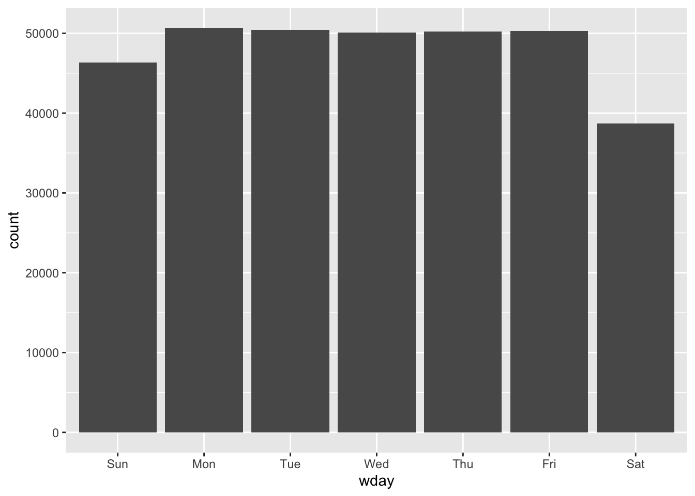

5.2 Date-time Components
Here, we will look at functions which can let us access certain components of a date-time object.
You can obtain certain parts of a date with functions like year(), month(), mday() (day of month), yday() (day of year), hour(), minute() and second().
date_time <- ymd_hms("2021-12-25,09:10:25")
year(date_time)## [1] 2021month(date_time)## [1] 12mday(date_time)## [1] 25yday(date_time)## [1] 359For month() and wday(), you can set label=TRUE to return the abbreviated name of the month or day of the week. Set abbr=FALSE to return the full name.
month(date_time,label=TRUE)## [1] Dec
## 12 Levels: Jan < Feb < Mar < Apr < May < Jun < Jul < Aug < Sep < ... < Decwday(date_time,label=TRUE,abbr=FALSE)## [1] Saturday
## 7 Levels: Sunday < Monday < Tuesday < Wednesday < Thursday < ... < SaturdayWe can use wday() to see that more flights depart during the week than on the weekend
flights %>%
mutate(wday = wday(departure_time, label = TRUE)) %>%
ggplot(aes(x = wday)) +
geom_bar()
5.2.1 Time Spans
Now we will look at how arithmetic with dates works, including subtraction, addition and division. We will explore the following three classes:
- durations, which represent an exact number of seconds
- periods, which represent units like weeks and months
- intervals, which represent a start and end point
5.2.2 Durations
We can find out the duration (given in seconds) using the as.duration() function as shown below
# How old is Craig?
c_age <- today() - ymd(19910502)
as.duration(c_age)## [1] "987379200s (~31.29 years)"Durations also come with some useful additional functions shown below
dseconds(10)## [1] "10s"dminutes(60)## [1] "3600s (~1 hours)"dhours(30)## [1] "108000s (~1.25 days)"ddays(c(4,15))## [1] "345600s (~4 days)" "1296000s (~2.14 weeks)"dweeks(1:4)## [1] "604800s (~1 weeks)" "1209600s (~2 weeks)" "1814400s (~3 weeks)"
## [4] "2419200s (~4 weeks)"dyears(2)## [1] "63115200s (~2 years)"We can also add and multiply durations
3*dmonths(5)## [1] "39447000s (~1.25 years)"dyears(3) + dweeks(14) +dhours(6)## [1] "103161600s (~3.27 years)"5.2.3 Periods
Periods are time spans, but don’t have a fixed length in seconds, and work more as “human” times, like days and weeks.
today() + days(1)## [1] "2022-08-16"Like durations, periods can be constructed using well named constructor functions.
seconds(15)## [1] "15S"minutes(10)## [1] "10M 0S"hours(30)## [1] "30H 0M 0S"days(c(2,5))## [1] "2d 0H 0M 0S" "5d 0H 0M 0S"months(2:5)## [1] "2m 0d 0H 0M 0S" "3m 0d 0H 0M 0S" "4m 0d 0H 0M 0S" "5m 0d 0H 0M 0S"weeks(3)## [1] "21d 0H 0M 0S"years(1)## [1] "1y 0m 0d 0H 0M 0S"Like durations, we can add and multiply periods
3*(months(4) + days(12))## [1] "12m 36d 0H 0M 0S"days(25) + hours(16) + minutes(12)## [1] "25d 16H 12M 0S"